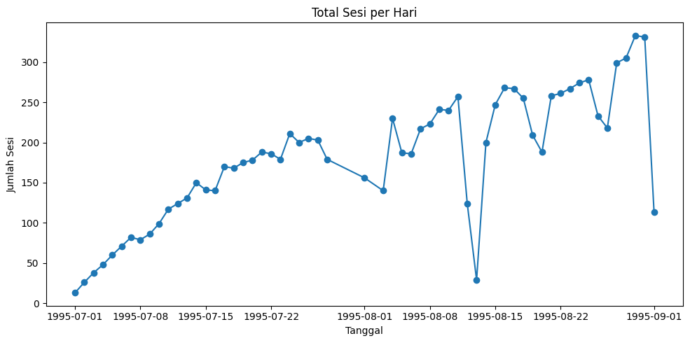

DATA NASA#
from google.colab import drive
drive.mount('/content/drive')
----------------------------------------------------------------
ModuleNotFoundError Traceback (most recent call last)
Cell In[1], line 1
----> 1 from google.colab import drive
2 drive.mount('/content/drive')
ModuleNotFoundError: No module named 'google.colab'
import pandas as pd
from IPython.display import display # <--- supaya tampil sebagai tabel
# Nama file input
file_name = "/content/drive/MyDrive/PPW/data.csv"
# 1. Muat dataset
print(f"Memuat data dari {file_name}...")
df = pd.read_csv(file_name) # CSV memakai koma
# 2. Info dataset
print("\nInfo data asli:")
df.info()
# 3. Tampilkan beberapa baris pertama
print("\nData asli (head):")
display(df.head()) # <--- tampil tabel
# 4. Kolom target
target_column = "url"
# 5. Periksa apakah kolom ada
if target_column not in df.columns:
print(f"Error: Kolom '{target_column}' tidak ditemukan di CSV.")
else:
# 6. Filter URL yang berakhiran .html
print(f"\nMemfilter data di mana '{target_column}' diakhiri '.html'...")
filtered_df = df[df[target_column].str.endswith('.html', na=False)].copy()
# 7. Simpan hasil filter
output_filename = "/content/drive/MyDrive/PPW/webusage/html_requests_only_NASA.csv"
filtered_df.to_csv(output_filename, index=False)
# 8. Tampilkan tabel hasil filter
print(f"\nBerhasil memfilter data dan menyimpannya ke {output_filename}.")
display(filtered_df.head()) # <--- tampil tabel
Memuat data dari /content/drive/MyDrive/PPW/data.csv...
Info data asli:
<class 'pandas.core.frame.DataFrame'>
RangeIndex: 2965561 entries, 0 to 2965560
Data columns (total 7 columns):
# Column Dtype
--- ------ -----
0 Unnamed: 0 int64
1 host object
2 time int64
3 method object
4 url object
5 response int64
6 bytes int64
dtypes: int64(4), object(3)
memory usage: 158.4+ MB
Data asli (head):
| Unnamed: 0 | host | time | method | url | response | bytes | |
|---|---|---|---|---|---|---|---|
| 0 | 0 | ***.novo.dk | 805465029 | GET | /ksc.html | 200 | 7067 |
| 1 | 1 | ***.novo.dk | 805465031 | GET | /images/ksclogo-medium.gif | 200 | 5866 |
| 2 | 2 | ***.novo.dk | 805465051 | GET | /images/MOSAIC-logosmall.gif | 200 | 363 |
| 3 | 3 | ***.novo.dk | 805465053 | GET | /images/USA-logosmall.gif | 200 | 234 |
| 4 | 4 | ***.novo.dk | 805465054 | GET | /images/NASA-logosmall.gif | 200 | 786 |
Memfilter data di mana 'url' diakhiri '.html'...
Berhasil memfilter data dan menyimpannya ke /content/drive/MyDrive/PPW/webusage/html_requests_only_NASA.csv.
| Unnamed: 0 | host | time | method | url | response | bytes | |
|---|---|---|---|---|---|---|---|
| 0 | 0 | ***.novo.dk | 805465029 | GET | /ksc.html | 200 | 7067 |
| 6 | 6 | ***.novo.dk | 805465068 | GET | /shuttle/missions/missions.html | 200 | 8678 |
| 12 | 12 | ***.novo.dk | 805465381 | GET | /shuttle/resources/orbiters/columbia.html | 200 | 6922 |
| 13 | 13 | ***.novo.dk | 807951768 | GET | /shuttle/missions/sts-69/mission-sts-69.html | 200 | 11264 |
| 23 | 23 | ***.novo.dk | 807951938 | GET | /shuttle/countdown/liftoff.html | 200 | 4665 |
Filter di ambil yang 200#
import pandas as pd
from IPython.display import display # <-- supaya tampil sebagai tabel
# Nama file input (file dari langkah sebelumnya)
file_name = "/content/drive/MyDrive/PPW/webusage/html_requests_only_NASA.csv"
# 1. Muat dataset
print(f"Memuat data dari {file_name}...")
df = pd.read_csv(file_name) # gunakan default comma
# 2. Tentukan kolom target
target_column = "response"
# 3. Periksa apakah kolom target ada
if target_column not in df.columns:
print(f"Error: Kolom '{target_column}' tidak ditemukan di CSV.")
else:
# 4. Periksa apakah kolomnya numerik
if pd.api.types.is_numeric_dtype(df[target_column]):
# 5. Filter baris response = 200
print(f"\nMemfilter data untuk baris di mana '{target_column}' adalah 200...")
filtered_df = df[df[target_column] == 200].copy()
# 6. Simpan data hasil filter
output_filename = "/content/drive/MyDrive/PPW/webusage/status_200_only_NASA.csv"
filtered_df.to_csv(output_filename, index=False)
# 7. Pratinjau tabel
print(f"\nBerhasil memfilter data dan menyimpannya ke {output_filename}.")
display(filtered_df.head()) # <-- tampil tabel
else:
print(f"Error: Kolom '{target_column}' bukan numerik.")
Memuat data dari /content/drive/MyDrive/PPW/webusage/html_requests_only_NASA.csv...
Memfilter data untuk baris di mana 'response' adalah 200...
Berhasil memfilter data dan menyimpannya ke /content/drive/MyDrive/PPW/webusage/status_200_only_NASA.csv.
| Unnamed: 0 | host | time | method | url | response | bytes | |
|---|---|---|---|---|---|---|---|
| 0 | 0 | ***.novo.dk | 805465029 | GET | /ksc.html | 200 | 7067 |
| 1 | 6 | ***.novo.dk | 805465068 | GET | /shuttle/missions/missions.html | 200 | 8678 |
| 2 | 12 | ***.novo.dk | 805465381 | GET | /shuttle/resources/orbiters/columbia.html | 200 | 6922 |
| 3 | 13 | ***.novo.dk | 807951768 | GET | /shuttle/missions/sts-69/mission-sts-69.html | 200 | 11264 |
| 4 | 23 | ***.novo.dk | 807951938 | GET | /shuttle/countdown/liftoff.html | 200 | 4665 |
#diambil get
import pandas as pd
from IPython.display import display # <-- untuk menampilkan tabel
# Nama file input (file dari langkah sebelumnya)
file_name = "/content/drive/MyDrive/PPW/webusage/status_200_only_NASA.csv"
filter_value = "GET"
target_column = "method"
# 1. Muat dataset
print(f"Memuat data dari {file_name}...")
df = pd.read_csv(file_name) # default comma
# 2. Periksa apakah kolom target ada
if target_column not in df.columns:
print(f"Error: Kolom '{target_column}' tidak ditemukan di CSV.")
else:
# 3. Filter method = GET
print(f"\nMemfilter data untuk baris di mana '{target_column}' adalah '{filter_value}'...")
filtered_df = df[df[target_column] == filter_value].copy()
# 4. Simpan file hasil filter
output_filename = "/content/drive/MyDrive/PPW/webusage/method_get_only_NASA.csv"
filtered_df.to_csv(output_filename, index=False)
# 5. Pratinjau hasil dalam bentuk tabel
print(f"\nBerhasil memfilter data dan menyimpannya ke {output_filename}.")
display(filtered_df.head()) # <-- tampil tabel
Memuat data dari /content/drive/MyDrive/PPW/webusage/status_200_only_NASA.csv...
Memfilter data untuk baris di mana 'method' adalah 'GET'...
Berhasil memfilter data dan menyimpannya ke /content/drive/MyDrive/PPW/webusage/method_get_only_NASA.csv.
| Unnamed: 0 | host | time | method | url | response | bytes | |
|---|---|---|---|---|---|---|---|
| 0 | 0 | ***.novo.dk | 805465029 | GET | /ksc.html | 200 | 7067 |
| 1 | 6 | ***.novo.dk | 805465068 | GET | /shuttle/missions/missions.html | 200 | 8678 |
| 2 | 12 | ***.novo.dk | 805465381 | GET | /shuttle/resources/orbiters/columbia.html | 200 | 6922 |
| 3 | 13 | ***.novo.dk | 807951768 | GET | /shuttle/missions/sts-69/mission-sts-69.html | 200 | 11264 |
| 4 | 23 | ***.novo.dk | 807951938 | GET | /shuttle/countdown/liftoff.html | 200 | 4665 |
Ubah tanggal dan waktu ke DMY#
import pandas as pd
from IPython.display import display # <-- untuk menampilkan tabel rapi
# Nama file input yang benar
file_name = "/content/drive/MyDrive/PPW/webusage/method_get_only_NASA.csv"
target_column = "time"
# 1. Muat dataset
print(f"Memuat data dari {file_name}...")
df = pd.read_csv(file_name) # gunakan pemisah default koma
# 2. Periksa apakah kolom target ada
if target_column not in df.columns:
print(f"Error: Kolom '{target_column}' tidak ditemukan di CSV.")
else:
# 3. Tampilkan format asli (Unix timestamp)
print(f"Format asli (baris pertama): {df[target_column].iloc[0]}")
# 4. Konversi Unix timestamp ke datetime
print(f"Mengonversi kolom '{target_column}' ke format Datetime...")
df["datetime_readable"] = pd.to_datetime(df[target_column], unit='s')
# 5. Simpan file baru
output_filename = "/content/drive/MyDrive/PPW/webusage/time_converted_NASA.csv"
df.to_csv(output_filename, index=False)
# 6. Tampilkan hasil dalam bentuk tabel
print(f"\nBerhasil mengonversi waktu dan menyimpannya ke {output_filename}.")
display(df.head()) # <-- tampil sebagai tabel
Memuat data dari /content/drive/MyDrive/PPW/webusage/method_get_only_NASA.csv...
Format asli (baris pertama): 805465029
Mengonversi kolom 'time' ke format Datetime...
Berhasil mengonversi waktu dan menyimpannya ke /content/drive/MyDrive/PPW/webusage/time_converted_NASA.csv.
| Unnamed: 0 | host | time | method | url | response | bytes | datetime_readable | |
|---|---|---|---|---|---|---|---|---|
| 0 | 0 | ***.novo.dk | 805465029 | GET | /ksc.html | 200 | 7067 | 1995-07-11 12:17:09 |
| 1 | 6 | ***.novo.dk | 805465068 | GET | /shuttle/missions/missions.html | 200 | 8678 | 1995-07-11 12:17:48 |
| 2 | 12 | ***.novo.dk | 805465381 | GET | /shuttle/resources/orbiters/columbia.html | 200 | 6922 | 1995-07-11 12:23:01 |
| 3 | 13 | ***.novo.dk | 807951768 | GET | /shuttle/missions/sts-69/mission-sts-69.html | 200 | 11264 | 1995-08-09 07:02:48 |
| 4 | 23 | ***.novo.dk | 807951938 | GET | /shuttle/countdown/liftoff.html | 200 | 4665 | 1995-08-09 07:05:38 |
Filter berdasarkan IP addres#
import pandas as pd
from IPython.display import display # <-- untuk menampilkan tabel rapi
# 1. Tentukan file input (file yang memiliki 'datetime_readable')
file_name = "/content/drive/MyDrive/PPW/webusage/time_converted_NASA.csv"
# 2. Tentukan kolom yang dibutuhkan
col_ip = "host" # Kolom pengelompokan sesi
col_time = "datetime_readable" # Kolom waktu (datetime)
new_col_name = "SESSION" # Nama kolom baru
print(f"Memuat data dari {file_name}...")
try:
# Gunakan pemisah default koma
df = pd.read_csv(file_name, parse_dates=[col_time])
except FileNotFoundError:
print(f"Error: File {file_name} tidak ditemukan.")
exit()
except ValueError as e:
print(f"Error saat membaca kolom '{col_time}': {e}")
exit()
# 4. Pastikan kolom tersedia
if col_ip in df.columns and col_time in df.columns:
# 5. Buat kolom SESSION berdasarkan host unik
print(f"Membuat kolom '{new_col_name}' berdasarkan host unik...")
df[new_col_name] = df[col_ip].astype('category').cat.codes + 1
# 6. Urutkan berdasarkan session dan waktu
print(f"Mengurutkan data berdasarkan '{new_col_name}' dan '{col_time}'...")
df_sorted = df.sort_values(by=[new_col_name, col_time])
# 7. Hapus kolom timestamp numerik agar rapi
if "time" in df_sorted.columns:
print("Menghapus kolom 'time' (timestamp unix) asli...")
df_sorted = df_sorted.drop(columns=["time"])
# 8. Simpan file baru
output_filename = "/content/drive/MyDrive/PPW/webusage/session_data_full_NASA.csv"
print(f"Menyimpan data ke {output_filename} dengan pemisah koma (',')...")
df_sorted.to_csv(output_filename, index=False)
print("\nBerhasil! Kolom SESSION sudah ditambahkan.")
print(f"File disimpan sebagai: {output_filename}")
print("\nPratinjau data:")
preview_cols = [new_col_name, col_ip, col_time, "url"]
# tampilkan tabel
display(df_sorted[preview_cols].head(50))
else:
print(f"Error: Kolom '{col_ip}' atau '{col_time}' tidak ditemukan di file.")
Memuat data dari /content/drive/MyDrive/PPW/webusage/time_converted_NASA.csv...
Membuat kolom 'SESSION' berdasarkan host unik...
Mengurutkan data berdasarkan 'SESSION' dan 'datetime_readable'...
Menghapus kolom 'time' (timestamp unix) asli...
Menyimpan data ke /content/drive/MyDrive/PPW/webusage/session_data_full_NASA.csv dengan pemisah koma (',')...
Berhasil! Kolom SESSION sudah ditambahkan.
File disimpan sebagai: /content/drive/MyDrive/PPW/webusage/session_data_full_NASA.csv
Pratinjau data:
| SESSION | host | datetime_readable | url | |
|---|---|---|---|---|
| 0 | 1 | ***.novo.dk | 1995-07-11 12:17:09 | /ksc.html |
| 1 | 1 | ***.novo.dk | 1995-07-11 12:17:48 | /shuttle/missions/missions.html |
| 2 | 1 | ***.novo.dk | 1995-07-11 12:23:01 | /shuttle/resources/orbiters/columbia.html |
| 3 | 1 | ***.novo.dk | 1995-08-09 07:02:48 | /shuttle/missions/sts-69/mission-sts-69.html |
| 4 | 1 | ***.novo.dk | 1995-08-09 07:05:38 | /shuttle/countdown/liftoff.html |
| 5 | 1 | ***.novo.dk | 1995-08-09 07:07:40 | /shuttle/countdown/lps/fr.html |
| 6 | 2 | 001.msy4.communique.net | 1995-08-30 06:55:47 | /software/winvn/winvn.html |
| 7 | 3 | 007.thegap.com | 1995-07-06 21:24:28 | /shuttle/missions/sts-71/mission-sts-71.html |
| 8 | 3 | 007.thegap.com | 1995-07-06 21:28:35 | /shuttle/missions/sts-71/mission-sts-71.html |
| 9 | 3 | 007.thegap.com | 1995-07-06 21:37:44 | /shuttle/missions/sts-71/images/images.html |
| 10 | 3 | 007.thegap.com | 1995-07-06 23:23:26 | /shuttle/countdown/tour.html |
| 11 | 4 | 01-dynamic-c.wokingham.luna.net | 1995-07-05 11:36:59 | /shuttle/missions/sts-71/movies/movies.html |
| 12 | 4 | 01-dynamic-c.wokingham.luna.net | 1995-07-10 12:18:27 | /history/history.html |
| 13 | 4 | 01-dynamic-c.wokingham.luna.net | 1995-07-10 12:18:57 | /shuttle/missions/missions.html |
| 14 | 4 | 01-dynamic-c.wokingham.luna.net | 1995-07-12 09:33:34 | /shuttle/missions/sts-71/mission-sts-71.html |
| 15 | 4 | 01-dynamic-c.wokingham.luna.net | 1995-07-27 21:02:24 | /ksc.html |
| 16 | 4 | 01-dynamic-c.wokingham.luna.net | 1995-08-28 00:08:50 | /shuttle/countdown/countdown.html |
| 17 | 4 | 01-dynamic-c.wokingham.luna.net | 1995-08-28 00:12:59 | /shuttle/countdown/count.html |
| 18 | 4 | 01-dynamic-c.wokingham.luna.net | 1995-08-28 00:18:34 | /shuttle/countdown/liftoff.html |
| 19 | 4 | 01-dynamic-c.wokingham.luna.net | 1995-08-28 00:36:38 | /shuttle/countdown/lps/fr.html |
| 20 | 4 | 01-dynamic-c.wokingham.luna.net | 1995-08-28 00:37:22 | /facilities/lcc.html |
| 21 | 4 | 01-dynamic-c.wokingham.luna.net | 1995-08-28 00:37:41 | /facilities/tour.html |
| 22 | 5 | 01.ts01.zircon.net.au | 1995-08-21 08:46:06 | /facts/faq04.html |
| 23 | 6 | 02-17-05.comsvc.calpoly.edu | 1995-08-28 15:03:26 | /shuttle/missions/sts-65/mission-sts-65.html |
| 24 | 7 | 02-dynamic-c.wokingham.luna.net | 1995-07-07 11:59:10 | /shuttle/missions/sts-68/ksc-srl-image.html |
| 25 | 8 | 023.msy4.communique.net | 1995-08-25 02:10:35 | /shuttle/missions/sts-64/mission-sts-64.html |
| 26 | 9 | 03-dynamic-c.wokingham.luna.net | 1995-07-04 16:33:06 | /shuttle/missions/sts-70/mission-sts-70.html |
| 27 | 9 | 03-dynamic-c.wokingham.luna.net | 1995-07-04 16:33:23 | /shuttle/missions/sts-71/mission-sts-71.html |
| 28 | 9 | 03-dynamic-c.wokingham.luna.net | 1995-07-04 16:36:10 | /shuttle/missions/sts-71/movies/movies.html |
| 29 | 9 | 03-dynamic-c.wokingham.luna.net | 1995-07-20 23:02:17 | /shuttle/missions/sts-70/mission-sts-70.html |
| 30 | 9 | 03-dynamic-c.wokingham.luna.net | 1995-07-20 23:02:23 | /shuttle/resources/orbiters/discovery.html |
| 31 | 9 | 03-dynamic-c.wokingham.luna.net | 1995-07-20 23:02:29 | /shuttle/resources/orbiters/endeavour.html |
| 32 | 9 | 03-dynamic-c.wokingham.luna.net | 1995-08-08 23:31:02 | /shuttle/missions/sts-69/mission-sts-69.html |
| 33 | 9 | 03-dynamic-c.wokingham.luna.net | 1995-08-08 23:35:51 | /shuttle/countdown/liftoff.html |
| 34 | 9 | 03-dynamic-c.wokingham.luna.net | 1995-08-08 23:43:48 | /shuttle/missions/sts-69/images/images.html |
| 35 | 10 | 0321jona.jon.rpslmc.edu | 1995-08-29 09:07:02 | /history/apollo/apollo.html |
| 36 | 10 | 0321jona.jon.rpslmc.edu | 1995-08-29 09:07:50 | /history/apollo/apollo-13/apollo-13.html |
| 37 | 10 | 0321jona.jon.rpslmc.edu | 1995-08-29 09:08:11 | /history/apollo/apollo-9/apollo-9.html |
| 38 | 10 | 0321jona.jon.rpslmc.edu | 1995-08-29 09:09:09 | /history/apollo/apollo-10/apollo-10.html |
| 39 | 10 | 0321jona.jon.rpslmc.edu | 1995-08-29 09:09:22 | /facilities/mlp.html |
| 40 | 10 | 0321jona.jon.rpslmc.edu | 1995-08-29 09:10:55 | /history/skylab/skylab.html |
| 41 | 10 | 0321jona.jon.rpslmc.edu | 1995-08-29 09:11:25 | /history/history.html |
| 42 | 11 | 033.msy4.communique.net | 1995-08-19 05:04:04 | /shuttle/missions/sts-66/mission-sts-66.html |
| 43 | 12 | 04-dynamic-c.rotterdam.luna.net | 1995-07-04 01:56:38 | /shuttle/missions/sts-70/mission-sts-70.html |
| 44 | 12 | 04-dynamic-c.rotterdam.luna.net | 1995-07-04 01:57:07 | /shuttle/resources/orbiters/discovery.html |
| 45 | 12 | 04-dynamic-c.rotterdam.luna.net | 1995-07-04 01:58:36 | /ksc.html |
| 46 | 12 | 04-dynamic-c.rotterdam.luna.net | 1995-07-04 01:59:30 | /shuttle/missions/sts-71/mission-sts-71.html |
| 47 | 13 | 04-dynamic-c.wokingham.luna.net | 1995-07-04 20:22:38 | /ksc.html |
| 48 | 13 | 04-dynamic-c.wokingham.luna.net | 1995-07-04 20:23:03 | /shuttle/missions/missions.html |
| 49 | 13 | 04-dynamic-c.wokingham.luna.net | 1995-07-04 20:23:48 | /shuttle/missions/sts-71/mission-sts-71.html |
import pandas as pd
from IPython.display import display # <-- supaya output berbentuk tabel
# 1. Tentukan file input (file yang memiliki 'datetime_readable')
file_name = "/content/drive/MyDrive/PPW/webusage/time_converted_NASA.csv"
# 2. Tentukan kolom-kolom yang akan kita gunakan
col_ip = "host" # Kolom untuk mengelompokkan sesi
col_time = "datetime_readable" # Kolom untuk mengurutkan sesi
new_col_name = "SESSION" # Nama kolom sesi baru
print(f"Memuat data dari {file_name}...")
try:
df = pd.read_csv(file_name, parse_dates=[col_time]) # koma default
except FileNotFoundError:
print(f"Error: File {file_name} tidak ditemukan.")
exit()
except ValueError as e:
print(f"Error saat membaca kolom '{col_time}': {e}")
exit()
# 4. Periksa kolom
if col_ip in df.columns and col_time in df.columns:
# 5. Buat kolom SESSION
print(f"Membuat kolom '{new_col_name}' berdasarkan host unik...")
df[new_col_name] = df[col_ip].astype('category').cat.codes + 1
# 6. Urutkan berdasarkan SESSION dan waktu
print(f"Mengurutkan data...")
df_sorted = df.sort_values(by=[new_col_name, col_time])
# 8. Simpan hanya 4 kolom
columns_to_keep = ['SESSION', 'host', 'datetime_readable', 'url']
df_final_output = df_sorted[columns_to_keep].copy()
# 9. Simpan ke CSV
output_filename = "/content/drive/MyDrive/PPW/webusage/session_host_time_url_NASA.csv"
df_final_output.to_csv(output_filename, index=False)
print(f"\nBerhasil! File disimpan sebagai: {output_filename}")
print("\nPratinjau data (tabel):")
display(df_final_output.head(20)) # <-- tampil tabel
else:
print(f"Error: Kolom '{col_ip}' atau '{col_time}' tidak ditemukan di file.")
Memuat data dari /content/drive/MyDrive/PPW/webusage/time_converted_NASA.csv...
Membuat kolom 'SESSION' berdasarkan host unik...
Mengurutkan data...
Berhasil! File disimpan sebagai: /content/drive/MyDrive/PPW/webusage/session_host_time_url_NASA.csv
Pratinjau data (tabel):
| SESSION | host | datetime_readable | url | |
|---|---|---|---|---|
| 0 | 1 | ***.novo.dk | 1995-07-11 12:17:09 | /ksc.html |
| 1 | 1 | ***.novo.dk | 1995-07-11 12:17:48 | /shuttle/missions/missions.html |
| 2 | 1 | ***.novo.dk | 1995-07-11 12:23:01 | /shuttle/resources/orbiters/columbia.html |
| 3 | 1 | ***.novo.dk | 1995-08-09 07:02:48 | /shuttle/missions/sts-69/mission-sts-69.html |
| 4 | 1 | ***.novo.dk | 1995-08-09 07:05:38 | /shuttle/countdown/liftoff.html |
| 5 | 1 | ***.novo.dk | 1995-08-09 07:07:40 | /shuttle/countdown/lps/fr.html |
| 6 | 2 | 001.msy4.communique.net | 1995-08-30 06:55:47 | /software/winvn/winvn.html |
| 7 | 3 | 007.thegap.com | 1995-07-06 21:24:28 | /shuttle/missions/sts-71/mission-sts-71.html |
| 8 | 3 | 007.thegap.com | 1995-07-06 21:28:35 | /shuttle/missions/sts-71/mission-sts-71.html |
| 9 | 3 | 007.thegap.com | 1995-07-06 21:37:44 | /shuttle/missions/sts-71/images/images.html |
| 10 | 3 | 007.thegap.com | 1995-07-06 23:23:26 | /shuttle/countdown/tour.html |
| 11 | 4 | 01-dynamic-c.wokingham.luna.net | 1995-07-05 11:36:59 | /shuttle/missions/sts-71/movies/movies.html |
| 12 | 4 | 01-dynamic-c.wokingham.luna.net | 1995-07-10 12:18:27 | /history/history.html |
| 13 | 4 | 01-dynamic-c.wokingham.luna.net | 1995-07-10 12:18:57 | /shuttle/missions/missions.html |
| 14 | 4 | 01-dynamic-c.wokingham.luna.net | 1995-07-12 09:33:34 | /shuttle/missions/sts-71/mission-sts-71.html |
| 15 | 4 | 01-dynamic-c.wokingham.luna.net | 1995-07-27 21:02:24 | /ksc.html |
| 16 | 4 | 01-dynamic-c.wokingham.luna.net | 1995-08-28 00:08:50 | /shuttle/countdown/countdown.html |
| 17 | 4 | 01-dynamic-c.wokingham.luna.net | 1995-08-28 00:12:59 | /shuttle/countdown/count.html |
| 18 | 4 | 01-dynamic-c.wokingham.luna.net | 1995-08-28 00:18:34 | /shuttle/countdown/liftoff.html |
| 19 | 4 | 01-dynamic-c.wokingham.luna.net | 1995-08-28 00:36:38 | /shuttle/countdown/lps/fr.html |
import pandas as pd
from IPython.display import display
# === 1. File input ===
file_name = "/content/drive/MyDrive/PPW/webusage/time_converted_NASA.csv"
col_ip = "host"
col_time = "datetime_readable"
print(f"Memuat data dari {file_name}...")
# Load file (pemisah koma)
df = pd.read_csv(file_name, parse_dates=[col_time])
# === 2. Sort data berdasarkan host dan waktu ===
df = df.sort_values(by=[col_ip, col_time]).reset_index(drop=True)
# === 3. Hitung selisih waktu antar request ===
df["time_diff"] = df.groupby(col_ip)[col_time].diff().dt.total_seconds()
# === 4. Tentukan apakah session baru (>= 30 menit = 1800 detik) ===
df["new_session"] = (df["time_diff"] > 1800).astype(int)
# === 5. Buat SESSION REAL berdasarkan cumulative sum ===
df["REAL_SESSION"] = df.groupby(col_ip)["new_session"].cumsum() + 1
# === 6. Hapus kolom bantu (opsional) ===
df_final = df.drop(columns=["time_diff", "new_session"])
# === 7. Simpan file output ===
output_filename = "/content/drive/MyDrive/PPW/webusage/real_session_30min_NASA.csv"
df_final.to_csv(output_filename, index=False)
print(f"\nBerhasil membuat SESSION REAL!")
print(f"File disimpan sebagai: {output_filename}")
print("\nPratinjau data (tabel):")
display(df_final.head(50))
Memuat data dari /content/drive/MyDrive/PPW/webusage/time_converted_NASA.csv...
Berhasil membuat SESSION REAL!
File disimpan sebagai: /content/drive/MyDrive/PPW/webusage/real_session_30min_NASA.csv
Pratinjau data (tabel):
| Unnamed: 0 | host | time | method | url | response | bytes | datetime_readable | REAL_SESSION | |
|---|---|---|---|---|---|---|---|---|---|
| 0 | 0 | ***.novo.dk | 805465029 | GET | /ksc.html | 200 | 7067 | 1995-07-11 12:17:09 | 1 |
| 1 | 6 | ***.novo.dk | 805465068 | GET | /shuttle/missions/missions.html | 200 | 8678 | 1995-07-11 12:17:48 | 1 |
| 2 | 12 | ***.novo.dk | 805465381 | GET | /shuttle/resources/orbiters/columbia.html | 200 | 6922 | 1995-07-11 12:23:01 | 1 |
| 3 | 13 | ***.novo.dk | 807951768 | GET | /shuttle/missions/sts-69/mission-sts-69.html | 200 | 11264 | 1995-08-09 07:02:48 | 2 |
| 4 | 23 | ***.novo.dk | 807951938 | GET | /shuttle/countdown/liftoff.html | 200 | 4665 | 1995-08-09 07:05:38 | 2 |
| 5 | 26 | ***.novo.dk | 807952060 | GET | /shuttle/countdown/lps/fr.html | 200 | 1879 | 1995-08-09 07:07:40 | 2 |
| 6 | 29 | 001.msy4.communique.net | 809765747 | GET | /software/winvn/winvn.html | 200 | 9630 | 1995-08-30 06:55:47 | 1 |
| 7 | 41 | 007.thegap.com | 805065868 | GET | /shuttle/missions/sts-71/mission-sts-71.html | 200 | 12722 | 1995-07-06 21:24:28 | 1 |
| 8 | 44 | 007.thegap.com | 805066115 | GET | /shuttle/missions/sts-71/mission-sts-71.html | 200 | 12722 | 1995-07-06 21:28:35 | 1 |
| 9 | 46 | 007.thegap.com | 805066664 | GET | /shuttle/missions/sts-71/images/images.html | 200 | 7634 | 1995-07-06 21:37:44 | 1 |
| 10 | 52 | 007.thegap.com | 805073006 | GET | /shuttle/countdown/tour.html | 200 | 4347 | 1995-07-06 23:23:26 | 2 |
| 11 | 71 | 01-dynamic-c.wokingham.luna.net | 804944219 | GET | /shuttle/missions/sts-71/movies/movies.html | 200 | 3089 | 1995-07-05 11:36:59 | 1 |
| 12 | 80 | 01-dynamic-c.wokingham.luna.net | 805378707 | GET | /history/history.html | 200 | 1602 | 1995-07-10 12:18:27 | 2 |
| 13 | 83 | 01-dynamic-c.wokingham.luna.net | 805378737 | GET | /shuttle/missions/missions.html | 200 | 8678 | 1995-07-10 12:18:57 | 2 |
| 14 | 85 | 01-dynamic-c.wokingham.luna.net | 805541614 | GET | /shuttle/missions/sts-71/mission-sts-71.html | 200 | 13374 | 1995-07-12 09:33:34 | 3 |
| 15 | 90 | 01-dynamic-c.wokingham.luna.net | 806878944 | GET | /ksc.html | 200 | 7280 | 1995-07-27 21:02:24 | 4 |
| 16 | 99 | 01-dynamic-c.wokingham.luna.net | 809568530 | GET | /shuttle/countdown/countdown.html | 200 | 4745 | 1995-08-28 00:08:50 | 5 |
| 17 | 102 | 01-dynamic-c.wokingham.luna.net | 809568779 | GET | /shuttle/countdown/count.html | 200 | 73231 | 1995-08-28 00:12:59 | 5 |
| 18 | 104 | 01-dynamic-c.wokingham.luna.net | 809569114 | GET | /shuttle/countdown/liftoff.html | 200 | 6980 | 1995-08-28 00:18:34 | 5 |
| 19 | 105 | 01-dynamic-c.wokingham.luna.net | 809570198 | GET | /shuttle/countdown/lps/fr.html | 200 | 1879 | 1995-08-28 00:36:38 | 5 |
| 20 | 111 | 01-dynamic-c.wokingham.luna.net | 809570242 | GET | /facilities/lcc.html | 200 | 2489 | 1995-08-28 00:37:22 | 5 |
| 21 | 115 | 01-dynamic-c.wokingham.luna.net | 809570261 | GET | /facilities/tour.html | 200 | 3826 | 1995-08-28 00:37:41 | 5 |
| 22 | 126 | 01.ts01.zircon.net.au | 808994766 | GET | /facts/faq04.html | 200 | 27063 | 1995-08-21 08:46:06 | 1 |
| 23 | 130 | 02-17-05.comsvc.calpoly.edu | 809622206 | GET | /shuttle/missions/sts-65/mission-sts-65.html | 200 | 131166 | 1995-08-28 15:03:26 | 1 |
| 24 | 140 | 02-dynamic-c.wokingham.luna.net | 805118350 | GET | /shuttle/missions/sts-68/ksc-srl-image.html | 200 | 1404 | 1995-07-07 11:59:10 | 1 |
| 25 | 144 | 023.msy4.communique.net | 809316635 | GET | /shuttle/missions/sts-64/mission-sts-64.html | 200 | 58811 | 1995-08-25 02:10:35 | 1 |
| 26 | 145 | 03-dynamic-c.wokingham.luna.net | 804875586 | GET | /shuttle/missions/sts-70/mission-sts-70.html | 200 | 13469 | 1995-07-04 16:33:06 | 1 |
| 27 | 149 | 03-dynamic-c.wokingham.luna.net | 804875603 | GET | /shuttle/missions/sts-71/mission-sts-71.html | 200 | 12451 | 1995-07-04 16:33:23 | 1 |
| 28 | 155 | 03-dynamic-c.wokingham.luna.net | 804875770 | GET | /shuttle/missions/sts-71/movies/movies.html | 200 | 3089 | 1995-07-04 16:36:10 | 1 |
| 29 | 157 | 03-dynamic-c.wokingham.luna.net | 806281337 | GET | /shuttle/missions/sts-70/mission-sts-70.html | 200 | 16020 | 1995-07-20 23:02:17 | 2 |
| 30 | 158 | 03-dynamic-c.wokingham.luna.net | 806281343 | GET | /shuttle/resources/orbiters/discovery.html | 200 | 6849 | 1995-07-20 23:02:23 | 2 |
| 31 | 159 | 03-dynamic-c.wokingham.luna.net | 806281349 | GET | /shuttle/resources/orbiters/endeavour.html | 200 | 6168 | 1995-07-20 23:02:29 | 2 |
| 32 | 160 | 03-dynamic-c.wokingham.luna.net | 807924662 | GET | /shuttle/missions/sts-69/mission-sts-69.html | 200 | 11264 | 1995-08-08 23:31:02 | 3 |
| 33 | 173 | 03-dynamic-c.wokingham.luna.net | 807924951 | GET | /shuttle/countdown/liftoff.html | 200 | 4665 | 1995-08-08 23:35:51 | 3 |
| 34 | 193 | 03-dynamic-c.wokingham.luna.net | 807925428 | GET | /shuttle/missions/sts-69/images/images.html | 200 | 2443 | 1995-08-08 23:43:48 | 3 |
| 35 | 197 | 0321jona.jon.rpslmc.edu | 809687222 | GET | /history/apollo/apollo.html | 200 | 3260 | 1995-08-29 09:07:02 | 1 |
| 36 | 202 | 0321jona.jon.rpslmc.edu | 809687270 | GET | /history/apollo/apollo-13/apollo-13.html | 200 | 18556 | 1995-08-29 09:07:50 | 1 |
| 37 | 205 | 0321jona.jon.rpslmc.edu | 809687291 | GET | /history/apollo/apollo-9/apollo-9.html | 200 | 3526 | 1995-08-29 09:08:11 | 1 |
| 38 | 210 | 0321jona.jon.rpslmc.edu | 809687349 | GET | /history/apollo/apollo-10/apollo-10.html | 200 | 3592 | 1995-08-29 09:09:09 | 1 |
| 39 | 212 | 0321jona.jon.rpslmc.edu | 809687362 | GET | /facilities/mlp.html | 200 | 2653 | 1995-08-29 09:09:22 | 1 |
| 40 | 216 | 0321jona.jon.rpslmc.edu | 809687455 | GET | /history/skylab/skylab.html | 200 | 1687 | 1995-08-29 09:10:55 | 1 |
| 41 | 219 | 0321jona.jon.rpslmc.edu | 809687485 | GET | /history/history.html | 200 | 1602 | 1995-08-29 09:11:25 | 1 |
| 42 | 228 | 033.msy4.communique.net | 808808644 | GET | /shuttle/missions/sts-66/mission-sts-66.html | 200 | 90112 | 1995-08-19 05:04:04 | 1 |
| 43 | 229 | 04-dynamic-c.rotterdam.luna.net | 804822998 | GET | /shuttle/missions/sts-70/mission-sts-70.html | 200 | 13468 | 1995-07-04 01:56:38 | 1 |
| 44 | 233 | 04-dynamic-c.rotterdam.luna.net | 804823027 | GET | /shuttle/resources/orbiters/discovery.html | 200 | 6861 | 1995-07-04 01:57:07 | 1 |
| 45 | 237 | 04-dynamic-c.rotterdam.luna.net | 804823116 | GET | /ksc.html | 200 | 7074 | 1995-07-04 01:58:36 | 1 |
| 46 | 245 | 04-dynamic-c.rotterdam.luna.net | 804823170 | GET | /shuttle/missions/sts-71/mission-sts-71.html | 200 | 12418 | 1995-07-04 01:59:30 | 1 |
| 47 | 248 | 04-dynamic-c.wokingham.luna.net | 804889358 | GET | /ksc.html | 200 | 7074 | 1995-07-04 20:22:38 | 1 |
| 48 | 254 | 04-dynamic-c.wokingham.luna.net | 804889383 | GET | /shuttle/missions/missions.html | 200 | 8677 | 1995-07-04 20:23:03 | 1 |
| 49 | 257 | 04-dynamic-c.wokingham.luna.net | 804889428 | GET | /shuttle/missions/sts-71/mission-sts-71.html | 200 | 12451 | 1995-07-04 20:23:48 | 1 |
import pandas as pd
import matplotlib.pyplot as plt
# Attempt to load the session data file
file_name = "/content/drive/MyDrive/PPW/webusage/real_session_30min_NASA.csv"
try:
df = pd.read_csv(file_name, parse_dates=["datetime_readable"])
except Exception as e:
print("Gagal memuat file:", e)
print("Pastikan file 'real_session_30min_NASA.csv' sudah di-upload ke folder kerja.")
raise
# =============== 2. TOTAL SESI PER HARI ===============
df["date"] = df["datetime_readable"].dt.date
sessions_per_day = df.groupby("date")["REAL_SESSION"].nunique()
plt.figure(figsize=(10,5))
sessions_per_day.plot(kind="line", marker="o")
plt.title("Total Sesi per Hari")
plt.xlabel("Tanggal")
plt.ylabel("Jumlah Sesi")
plt.tight_layout()
plt.show()
